전산응용기계제도기능사 (2009-01-18 기출문제)
1과목: 기계재료 및 요소
1. 열처리에서 재질을 경화시킬 목적으로 강을 오스테나이트 조직의 영역으로 가열한 후 급냉시키는 열처리는?
- 뜨임
- 풀림
- 담금질
- 불림
(정답률: 82%)

2. Cu3.5 ~ 4.5%, Mg1 ~ 1.5%, Si0.5%, Mn0.5~1.0%, 나머지 Al인 합금으로 무게를 중요시한 항공기나 자동차에 사용되는 고력 Al합금인 것은?
- 두랄루민
- 하이드로날륨
- 알드레이
- 내식 알루미늄
(정답률: 82%)
3. 미끄럼 베어링과 비교한 구름 베어링의 특징에 대한 설명으로 틀린 것은?
- 마찰계수가 작고 특히 기동마찰이 적다.
- 규격화되어 있어 표준형 양산품이 있다.
- 진동하중에 강하고 호환성이 없다.
- 전동체가 있어서 고속회전에 불리하다.
(정답률: 47%)
4. 비틀림 각이 30°인 헬리컬 기어에서 잇수가 40이고 축직각모듈이 4일 때 피치원의 직경은 몇mm인가?
- 160
- 170.27
- 168
- 184.75
(정답률: 61%)
5. 다음 그림에서 W = 300N의 하중이 작용하고 있다. 스프링 상수가 K1=5 N/㎜, K2=10 N/㎜라면, 늘어난 길이는 몇㎜인가?
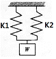
- 15
- 20
- 25
- 30
(정답률: 56%)
6. V벨트는 단면 형상에 따라 구분되는데 가장 단면이 큰 벨트의 형은?
- A
- C
- E
- M
(정답률: 68%)
7. 가공재료의 단면에 수직 방향으로 작용하는 하중은?
- 전단 하중
- 굽힘 하중
- 인장 하중
- 비틀림 하중
(정답률: 45%)
8. 상온 취성(Cold Shortness)의 주된 원인이 되는 물질로 가장 적합한 것은?
- 탄소(C)
- 규소(Si)
- 인(P)
- 황(S)
(정답률: 43%)
9. 브레이크의 마찰면이 원판으로 되어 있고, 원판의 수에 따라 단판 브레이크와 다판 브레이크로 분류되는 것은?
- 블록 브레이크
- 밴드 브레이크
- 드럼 브레이크
- 디스크 브레이크
(정답률: 59%)
10. Cu에 60~70%의 Ni 함유량을 첨가한 Ni-Cu계의 합금이며, 내식성이 좋으므로 화학 공업용 재료로 많이 쓰이는 재료는 어느 것인가?
- Y합금
- 니크롬
- 모넬메탈
- 콘스탄탄
(정답률: 35%)
2과목: 기계가공법 및 안전관리
11. 미터 나사에 대한 설명으로 올바른 것은?
- 나사산의 각도는 60°이다.
- ABC 나사라고도 한다.
- 운동용 나사이다.
- 피치는 1인치당 나사산의 수로 나타난다.
(정답률: 53%)
12. 보스와 축의 둘레에 여러 개의 키(key)를 깎아 붙인 모양으로 큰 동력을 전달할 수 있고 내구력이 크며, 축과 보스의 중심을 정확하게 맞출 수 있는 특징을 가지는 것은?
- 새들 키
- 원뿔 키
- 반달 키
- 스플라인
(정답률: 77%)
13. 구리에 니켈 40~45%의 함유량을 첨가하는 합금으로 통신기, 전열선 등의 전기저항 재료로 이용되는 것은?
- 모넬메탈
- 콘스탄탄
- 엘린바
- 인바
(정답률: 62%)
14. 강과 비교한 주철의 특성이 아닌 것은?
- 주조성이 우수하다.
- 복잡한 형상을 생산할 수 있다.
- 주물제품을 값싸게 생산 할 수 있다.
- 강에 비해 강도가 비교적 높다.
(정답률: 67%)
15. 니켈-크롬강에서 나타나는 뜨임취성을 방지하기 위해 첨가하는 원소는?
- 크롬(Cr)
- 탄소(C)
- 몰리브덴(Mo)
- 인(P)
(정답률: 46%)
16. 수평 밀링머신으로 가공할 때 유의사항으로 틀린 것은?
- 가능한 한 공작물은 깊게 바이스에 고정시킨다.
- 하향 절삭시 뒤틈제거 장치를 반드시 풀어 놓는다.
- 커터는 나무 등 연질재료로 받쳐 놓는다.
- 반드시 보호 안경을 착용하며 장갑은 끼지 않는다.
(정답률: 51%)
17. 래핑작업에 사용하는 일반적인 랩의 재료가 아닌 것은?
- 고속도강
- 알루미늄
- 주철
- 동
(정답률: 49%)
18. 이미 치수를 알고 있는 표준과의 차를 구하여 치수를 알아내는 측정방법을 무엇이라 하는가?
- 절대 측정
- 비교 측정
- 표준 측정
- 간접 측정
(정답률: 63%)
19. 절삭유의 역할로써 가장 거리가 먼 것은?
- 냉각작용
- 침투작용
- 윤활작용
- 세척작용
(정답률: 74%)
20. 선반 가공에서 테이퍼의 절삭방법이 아닌 것은?
- 방진구에 의한 방법
- 심압대 편위에 의한 방법
- 복식 공구대에 의한 방법
- 테이퍼 절삭 장치에 의한 방법
(정답률: 55%)
21. 슬로터(slotter)를 바르게 설명한 것은?
- 선반보다 원통 절삭에 편리하다.
- 치수가 큰 공작물의 수평 절삭에 편리하다.
- 치수가 작은 공작물의 수직 절삭에 편리하다.
- 주로 헬리컬 기어 가공에 편리하게 사용된다.
(정답률: 40%)
22. 수공구 작업에서 해머와 정 작업을 할 때 잘못된 것은 어느 것인가?
- 기름이 묻은 손이나 장갑을 끼고 가공하지 말 것
- 따내기 작업시 보안경을 착용할 것
- 정을 잡은 손은 힘을 꽉 줄 것
- 열처리된 재료는 해머로 때리지 않도록 주의할 것
(정답률: 68%)
23. 정밀입자 가공 기계에 속하는 것은?
- 밀링 머신
- 호빙 머신
- 호닝 머신
- 보링 머신
(정답률: 54%)
24. 원통 연삭시 지름이 300㎜인 연삭숫돌로 지름이 200㎜인 공작물을 연삭할 때에 숫돌바퀴의 원주 속도는 1,500m/min이다. 이 때 숫돌바퀴의 회전수는 약 몇 rpm인가?
- 1492
- 1592
- 1692
- 1792
(정답률: 56%)
25. 롤러의 중심거리가 100㎜인 사인바로 5°의 테이퍼 값이 측정되었을 때 정반위에 놓은 사인바의 양 롤러간의 높이의 차는 약 몇㎜인가?
- 8.72
- 7.72
- 4.36
- 3.36
(정답률: 29%)
3과목: 기계제도
26. 표면거칠기 기입 방법으로 틀린 것은?
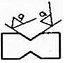
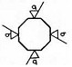
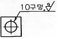
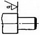
(정답률: 54%)
27. IT공차에 대한 설명으로 옳은 것은?
- IT 01부터 IT 18까지 20등급으로 구분되어 있다.
- IT 01 ~ IT 4는 구멍 기준공차에서 게이지 제작공차이다.
- IT 6 ~ IT10은 축 기준공차에서 끼워맞춤 공차이다.
- IT 10 ~ IT 18은 구멍 기준공차에서 끼워맞춤 이외의 공차이다.
(정답률: 71%)
28. 대상면의 일부에 특수한 가공을 하는 부분의 범위를 표시할 때 사용하는 선은?
- 굵은 1점 쇄선
- 굵은 실선
- 파선
- 가는 2점 쇄선
(정답률: 74%)
29. 끼워 맞춤에서 최대 죔새를 구하는 방법은?
- 축의 최대 허용 치수 - 구멍의 최소 허용 치수
- 구멍의 최소 허용 치수 - 축의 최대 허용 치수
- 구멍의 최대 허용 치수 - 축의 최소 허용 치수
- 축의 최소 허용 치수 - 구멍의 최대 허용 치수
(정답률: 67%)
30. 도면에서 대상물의 보이지 않은 부분의 모양을 표시하는 선은?
- 파선
- 굵은 실선
- 가는 1점 쇄선
- 가는 2점 쇄선
(정답률: 64%)
31. 제도에서 도면의 크기 및 양식에 관련된 내용 중 틀린 것은?
- 제도 용지의 세로와 가로의 비는 1 : 루트 2 이다.
- A2 도면의 크기는 420x594이다.
- 반드시 마련해야 하는 도면의 양식은 윤곽선, 표제란, 중심마크이다.
- 도면을 접어서 보관할 경우에는 A3의 크기로 한다.
(정답률: 78%)
32. 스케치도를 작성할 필요가 없는 경우는?
- 도면이 없는 부품을 제작하고자 할 경우
- 도면이 없는 부품이 파손되어 수리 제작할 경우
- 현품을 기준으로 개선된 부품을 고안하려 할 경우
- 제품 제작을 위해 도면을 복사할 경우
(정답률: 77%)
33. 2종류 이상의 선이 같은 장소에서 중복될 경우에 다음 중 가장 우선되는 선의 종류는?
- 치수선
- 무게 중심선
- 치수 보조선
- 절단선
(정답률: 71%)
34. 보기의 등각 투상도를 온 단면도로 나타낸 것은?
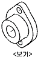
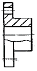
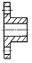
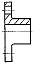
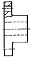
(정답률: 73%)
35. 다음은 어떤 물체를 보고 제3각법으로 그린 정투상도이다. 화살표 방향을 정면으로 보았을 때 등각 투상도로 올바른 것은?
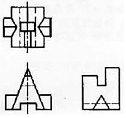
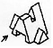
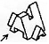
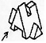
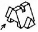
(정답률: 79%)
36. 국부 투상도의 설명에 해당하는 것은?
- 대상물의 구멍, 홈 등과 같이 한 부분의 모양을 도시하는 것으로 충분한 경우의 투상도
- 그림의 특정 부분만을 확대하여 그린 그림
- 복잡한 물체를 절단하여 투상한 것
- 물체의 경사면의 맞서는 위치에 그린 투상도
(정답률: 69%)
37. 축의 지름이
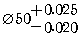
일 때 공차는?- 0.025
- 0.02
- 0.045
- 0.0⑤
(정답률: 74%)
38. 도면이 구비하여야 할 기본 요건이 아닌 것은?
- 보는 사람이 이해하기 쉬운 도면
- 도면을 그린 사람이 임의로 그린 도면
- 표면정도, 재질, 가공 방법 등의 정보성을 포함한 도면
- 대상물의 크기, 모양, 자세, 위치 등의 정보성을 포함 한 도면
(정답률: 87%)
39. 줄무늬 방향 기호의 뜻으로 틀린 것은?
- 〓: 가공에 의한 커터의 줄무늬 방향이 기호를 기입한 그림의 투상면에 평행
- ⊥ : 가공에 의한 커터의 줄무늬 방향이 기호를 기입한 그림의 투상면에 직각
- × : 가공에 의한 커터의 줄무늬 방향이 여러 방향으로 교차 또는 무방향
- C : 가공에 의한 커터의 줄무늬가 기호를 기입한 면의 중심에 대하여 대략 동심원 모양
(정답률: 71%)
40. 도면에 기입되는 치수는 특별히 명시하지 않는 한 보통 어떤 치수를 기입하는가?
- 재료 치수
- 마무리 치수
- 반제품 치수
- 소재 치수
(정답률: 62%)
41. 정투상 방법에 관한 설명 중 틀린 것은?
- 한국 산업 규격에서는 제3각법으로 도면을 작성하는 것을 원칙으로 한다.
- 한 도면에 제1각법과 제3각법을 혼용하여 사용해도 된다.
- 제3각법은 ‘눈→투상면→물체’ 순으로 놓고 투상한다.
- 제1각법에서 평면도는 정면도 밑에 우측면도는 정면도 좌측에 배치한다.
(정답률: 75%)
42. 제3각법으로 투상한 그림과 같은 도면에서 누락된 평면도에 가장 적합한 것은?
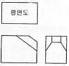
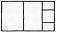
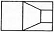
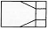
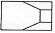
(정답률: 64%)
43. 다음과 같은 기하학적 치수공차 방식의 설명으로 틀린 것은?
- ⊥ : 공차의 종류 기호
- 0.009 : 공차 값
- 150 : 전체 길이
- A : 데이텀 문자 기호
(정답률: 64%)
44. 치수 기입의 일반 형식 중에서 이론적으로 정확한 치수의 도시 방법은?
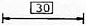
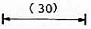
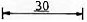
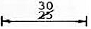
(정답률: 82%)
45. 모양 공차 기호 중에서 원통도를 나타내는 기호는?
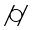
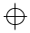
(정답률: 77%)
46. ISO규격에 있는 것으로 미터 사다리꼴나사의 종류를 표시하는 기호는?
- M
- S
- Rc
- Tr
(정답률: 76%)
47. 결합용 기계요소라고 볼 수 없는 것은?
- 나사
- 키
- 베어링
- 코터
(정답률: 51%)
48. 작은 쪽의 지름을 호칭지름으로 나타내는 핀은?
- 평행핀 A형
- 평행핀 B형
- 분할 핀
- 테이퍼 핀
(정답률: 72%)
49. 축의 도시방법에 대한 설명으로 틀린 것은?
- 긴 축은 중간 부분을 파단하여 짧게 그리고 실제치수를 기입한다.
- 길이 방향으로 절단하여 단면을 도시한다.
- 축의 끝에는 조립을 쉽고 정확하게 하기 위해서 모따기를 한다.
- 축의 일부 중 평면 부위는 가는실선의 대각선으로 표시한다.
(정답률: 70%)
50. 모듈이 2이고 잇수가 20과 40인 표준 평기어의 중심 거리는?
- 30㎜
- 40㎜
- 60㎜
- 80㎜
(정답률: 67%)
51. 코일 스프링의 제도에 대한 설명 중 틀린 것은?
- 스프링은 원칙적으로 하중이 걸리지 않는 상태로 도시한다.
- 스프링의 종류와 모양만을 도시할 때에는 재료의 중심선만을 굵은 실선으로 그린다.
- 특별한 단서가 없는 한 모두 오른쪽 감기로 도시하고 왼쪽 감기일 경우 “감긴 방향 왼쪽”이라고 표시한다.
- 코일 부분의 중간 부분을 생략할 때에는 생략한 부분을 가는실선으로 표시한다.
(정답률: 56%)
52. 벨트 풀리의 도시 방법에 관한 내용이다. 틀린 것은?
- 벨트 풀리는 축 직각 방향의 투상을 주투상도로 한다.
- 모양이 대칭형인 벨트 풀리라도 일부만을 도시할 수는 없다.
- 암(arm)은 길이 방향으로 절단하여 단면을 도시하지 않는다.
- 벨트 풀리의 홈 부분 치수는 해당하는 형별, 호칭지름에 따라 결정된다.
(정답률: 62%)
53. 다음은 관의 장치도를 단선으로 표시한 것이다. 체크밸브를 나타내는 기호는?
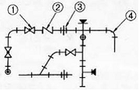
- ①
- ②
- ③
- ④
(정답률: 78%)
54. 스퍼기어의 도시방법을 설명한 것 중 틀린 것은?
- 보통 축에 직각인 방향에서 본 투상도를 주투상도로 할 수 있다.
- 정면도, 측면도 모두 이끝원은 굵은 실선으로 그린다.
- 피치원은 가는 1점 쇄선으로 그린다.
- 이뿌리원은 가는 2점 쇄선으로 그리지만 측면도에서는 생략해도 좋다.
(정답률: 73%)
55. 베어링의 호칭이 [6026P6]이다. 여기서 P6가 나타내는 것은?
- 등급기호
- 안지름 번호
- 계열번호
- 치수계열
(정답률: 67%)
56. 용접부의 기호 중 플러그 용접을 나타내는 것은?
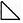
(정답률: 74%)
57. 칼라 디스플레이(color display)에 의해서 표현할 수 있는 색들은 어느 3색의 혼합에 의해서 인가?
- 빨강, 파랑, 초록
- 빨강, 하얀, 노랑
- 파랑, 검정, 하얀
- 하얀, 검정, 노랑
(정답률: 85%)
58. 중앙처리장치(CPU)의 구성 요소가 아닌 것은?
- 주기억장치
- 파일저장장치
- 논리연산장치
- 제어장치
(정답률: 72%)
59. CAD 프로그램에서 사용되지 않는 좌표계는?
- 직교 좌표계
- 원통 좌표계
- 극 좌표계
- 원형 좌표계
(정답률: 49%)
60. 아래 그림은 공간상의 선을 이용하여 3차원 물체의 가장자리 능선을 표시하여 주는 모델이다. 이러한 모델링은?
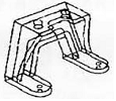
- 서피스 모델링
- 와이어프레임 모델링
- 솔리드 모델링
- 이미지 모델링
(정답률: 60%)